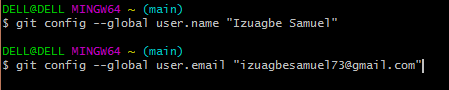
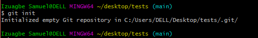
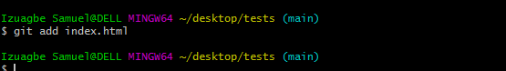

April 23, 2021 | By Izuagbe Samuel
GitHub is a trending and a very popular public gathering for Developers. It's where millions of developers contribute to the future of software, contributing to the open source of millions of public and private codes. Using Git Bash as an application for Microsoft Windows environment to make changes to you GitHub account.
Is a command prompt navigator or a control system that allows users to navigate through your system to make files, remove files, make a directory, and take snapshot of our codes to GitHub.
In this blog I'll be talking about various Git commands:
We'll also deal with some commands that helps us navigate through the computer:
This command sets the author name and email address globally when commit.
Command Line: git config --global user.name "[name]"
Command Line: git config --global user.email "[email]"
When we commit our codes, (I know you're wondering what commit is we'll talk more about it later in this blog) we want our names or credential to be authored by us. git config sets our names and email to be the author of any code we commit.
This command is used to start a repository. Using git init means initializing the git files in you directory or folder when starting a repository.
Command Line: git init
This command add a file to the staging area
Command Line: git add [file name]
